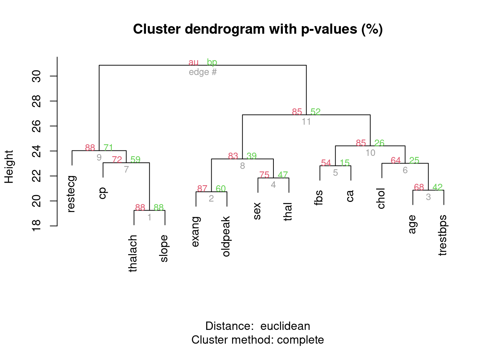
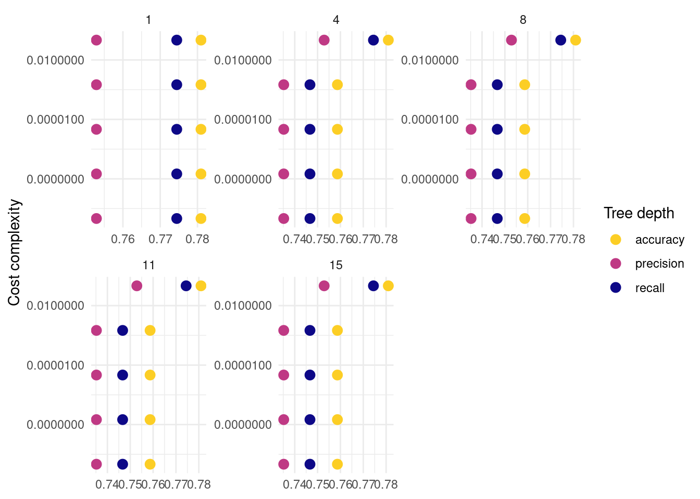

Chapter 16 The pvclust package
The pvclust package offers a straightfoward way to perform hierarchical agglomerative clustering of columns with two types of p-values at each split: approximately unbiased (AU) and bootstrap probability (BP).
16.1 Compare different dissimilarity measures
16.1.1 Ward’s method: minimum variance between clusters
system.time({
pvclust_model_ward <- pvclust(ml_num,
method.hclust = "ward.D",
method.dist = "euclidean",
nboot = 1000, parallel = T
)
})## Creating a temporary cluster...done:
## socket cluster with 7 nodes on host 'localhost'
## Multiscale bootstrap... Done.## user system elapsed
## 0.056 0.012 6.212
16.1.2 Complete linkage: largest intercluster difference
pvclust_model_complete <- pvclust(ml_num,
method.hclust = "complete",
method.dist = "euclidean",
nboot = 1000, parallel = T
)## Creating a temporary cluster...done:
## socket cluster with 7 nodes on host 'localhost'
## Multiscale bootstrap... Done.
16.1.3 Single linkage: smallest intercluster difference
pvclust_model_single <- pvclust(ml_num[, -6],
method.hclust = "single",
method.dist = "euclidean",
nboot = 1000, parallel = T
)## Creating a temporary cluster...done:
## socket cluster with 7 nodes on host 'localhost'
## Multiscale bootstrap... Done.
16.1.4 Average linkage: mean intercluster difference
pvclust_model_average <- pvclust(ml_num[, -6],
method.hclust = "average",
method.dist = "euclidean",
nboot = 1000, parallel = T
)## Creating a temporary cluster...done:
## socket cluster with 7 nodes on host 'localhost'
## Multiscale bootstrap... Done.
16.1.5 View summaries
(clust_sum <- list(
"Ward" = pvclust_model_ward$edges,
"Complete" = pvclust_model_complete$edges,
"Single" = pvclust_model_single$edges,
"Average" = pvclust_model_average$edges
))## $Ward
## si au bp se.si se.au se.bp v
## 1 0.7269242 0.8579491 0.8794824 0.03269899 0.02187613 0.003491465 -1.1217769
## 2 0.5991985 0.8657038 0.6004041 0.03431088 0.01680683 0.005130093 -0.6803516
## 3 0.1276051 0.6810785 0.4142985 0.04332886 0.02783930 0.005116994 -0.1271076
## 4 0.3934461 0.7912143 0.5034610 0.04087295 0.02215940 0.005206619 -0.4096586
## 5 0.0000000 0.6730855 0.1104348 0.00000000 0.03837392 0.003253403 0.3878848
## 6 0.6793806 0.8728143 0.7310311 0.03074251 0.01683672 0.004673642 -0.8778651
## 7 0.0000000 0.7413454 0.1408951 0.00000000 0.03227300 0.003604620 0.2144039
## 8 0.5587012 0.8859427 0.4637536 0.03804639 0.01509908 0.005200684 -0.5571240
## 9 0.4738675 0.8763958 0.3865744 0.04353954 0.01635829 0.005063868 -0.4344490
## 10 0.6610500 0.8622648 0.7312858 0.03179148 0.01788210 0.004677327 -0.8536289
## 11 0.6906898 0.8813694 0.7222132 0.03026077 0.01604157 0.004731330 -0.8856446
## 12 1.0000000 1.0000000 1.0000000 0.00000000 0.00000000 0.000000000 0.0000000
## c pchi
## 1 -0.05062633 0.2399098
## 2 0.42595836 0.8641242
## 3 0.34360908 0.1455250
## 4 0.40098309 0.1685833
## 5 0.83633401 0.9440834
## 6 0.26193071 0.6009972
## 7 0.86190267 0.6529663
## 8 0.64810553 0.2375559
## 9 0.72270757 0.1914598
## 10 0.23692234 0.7976233
## 11 0.29621580 0.7533500
## 12 0.00000000 0.0000000
##
## $Complete
## si au bp se.si se.au se.bp v
## 1 0.7657393 0.8827127 0.8833726 0.02987459 0.01911662 0.003446944 -1.1903367
## 2 0.6069265 0.8692487 0.6016294 0.03396873 0.01648906 0.005126792 -0.6902069
## 3 0.1313465 0.6799257 0.4190532 0.04311121 0.02785080 0.005125514 -0.1315874
## 4 0.2980421 0.7514744 0.4722157 0.04232937 0.02444604 0.005192427 -0.3047178
## 5 0.0000000 0.5370601 0.1454891 0.00000000 0.03829674 0.003677856 0.4814740
## 6 0.0000000 0.6380626 0.2499056 0.00000000 0.03189882 0.004495480 0.1607509
## 7 0.3505727 0.7220289 0.5894265 0.03900743 0.02591229 0.005129585 -0.4074747
## 8 0.3746975 0.8348961 0.3865994 0.04586102 0.01982034 0.005057236 -0.3427510
## 9 0.6883319 0.8831564 0.7099006 0.03021981 0.01573440 0.004785537 -0.8720045
## 10 0.2552454 0.8504031 0.2614471 0.05771975 0.02026512 0.004551675 -0.1996367
## 11 0.5168844 0.8512260 0.5152956 0.03818870 0.01793776 0.005213745 -0.5400279
## 12 1.0000000 1.0000000 1.0000000 0.00000000 0.00000000 0.000000000 0.0000000
## c pchi
## 1 -0.001679659 0.7996406
## 2 0.432640007 0.9316194
## 3 0.335903585 0.1370054
## 4 0.374419043 0.9193855
## 5 0.574503972 0.2336639
## 6 0.514035803 0.1205188
## 7 0.181404594 0.7828979
## 8 0.630944274 0.6666002
## 9 0.318910068 0.4476873
## 10 0.838527197 0.5505101
## 11 0.501678197 0.7210080
## 12 0.000000000 0.0000000
##
## $Single
## si au bp se.si se.au se.bp
## 1 0.7749747 0.8877312 0.8866912 0.029050591 0.018475858 0.003397048
## 2 0.9950030 0.9983697 0.9794006 0.002240409 0.000852986 0.001749665
## 3 0.5198927 0.8575670 0.5005754 0.038440371 0.017459293 0.005216209
## 4 0.0221767 0.6481058 0.3679174 0.043711516 0.029228283 0.005007447
## 5 0.2201903 0.8285180 0.2753468 0.055718629 0.021510730 0.004631225
## 6 0.1266097 0.8394490 0.2090932 0.066148347 0.022284848 0.004209703
## 7 0.0000000 0.7364359 0.2017833 0.000000000 0.029373801 0.004157482
## 8 0.0000000 0.6811135 0.2589840 0.000000000 0.030089328 0.004542851
## 9 0.9694292 0.9917712 0.8785892 0.006355647 0.002141905 0.003639214
## 10 0.5152901 0.8275458 0.5812270 0.037133018 0.019757784 0.005153986
## 11 1.0000000 1.0000000 1.0000000 0.000000000 0.000000000 0.000000000
## v c pchi
## 1 -1.21183411 0.002716389 0.2390951
## 2 -2.49177667 0.450253289 0.9448118
## 3 -0.53544723 0.534004987 0.4120319
## 4 -0.02141871 0.358792862 0.4677846
## 5 -0.17580205 0.772523025 0.1573433
## 6 -0.09131195 0.900883781 0.6322406
## 7 0.10143630 0.733832186 0.7062607
## 8 0.08783297 0.558647896 0.9796366
## 9 -1.78328512 0.615321703 0.3463630
## 10 -0.57477238 0.369738837 0.5923427
## 11 0.00000000 0.000000000 0.0000000
##
## $Average
## si au bp se.si se.au se.bp
## 1 7.941617e-01 0.9004604 0.8852884 0.027677409 0.017037442 0.003435467
## 2 5.524321e-01 0.8497042 0.5742835 0.036216593 0.018086060 0.005172138
## 3 9.387419e-02 0.6465575 0.4276785 0.041440204 0.028769373 0.005140184
## 4 9.664399e-01 0.9875661 0.9432170 0.008484313 0.003799928 0.002656417
## 5 1.186007e-01 0.6803320 0.4075046 0.043545532 0.027895237 0.005104085
## 6 6.042911e-05 0.7644086 0.2356198 0.059743343 0.026708349 0.004397129
## 7 2.695425e-01 0.8156063 0.3318026 0.050318605 0.021685100 0.004887022
## 8 1.375737e-01 0.8060159 0.2584924 0.057969516 0.023541593 0.004537864
## 9 9.572617e-01 0.9846060 0.9256175 0.009419366 0.004154461 0.002938209
## 10 9.693257e-01 0.9885059 0.9489592 0.007914070 0.003570205 0.002502989
## 11 1.000000e+00 1.0000000 1.0000000 0.000000000 0.000000000 0.000000000
## v c pchi
## 1 -1.243013e+00 0.04116669 0.47507037
## 2 -6.112279e-01 0.42393765 0.53313188
## 3 -9.687757e-02 0.27916520 0.31727552
## 4 -1.912909e+00 0.33054240 0.46605948
## 5 -1.173293e-01 0.35129809 0.38342034
## 6 -4.626553e-05 0.72050976 0.39907793
## 7 -2.319031e-01 0.66684405 0.01704856
## 8 -1.076539e-01 0.75565409 0.12090750
## 9 -1.801855e+00 0.35794763 0.51456154
## 10 -1.954238e+00 0.31939333 0.05091501
## 11 0.000000e+00 0.00000000 0.0000000016.1.6 Plot Euclidean distance linkages
par(mfrow = c(2, 2))
plot(pvclust_model_ward, main = "Ward", xlab = "", sub = "")
pvrect(pvclust_model_ward, alpha = 0.95)
plot(pvclust_model_complete, main = "Complete", xlab = "", sub = "")
pvrect(pvclust_model_complete, alpha = 0.95)
plot(pvclust_model_single, main = "Single", xlab = "", sub = "")
pvrect(pvclust_model_single, alpha = 0.95)
plot(pvclust_model_average, main = "Average", xlab = "", sub = "")
pvrect(pvclust_model_average, alpha = 0.95)